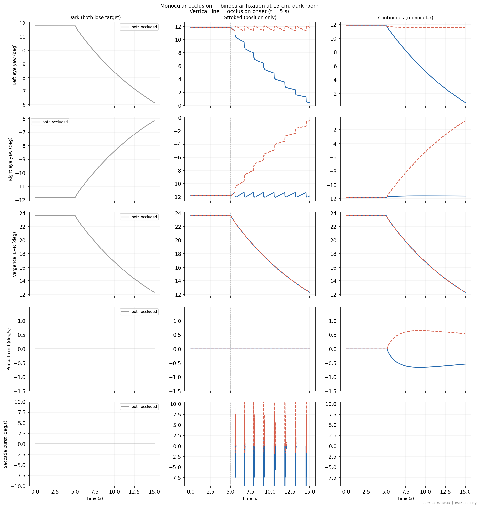

OculomotorJax — Experiments
Experimental
Exploratory paradigms: monocular occlusion, binocular fixation maintenance.

Monocular occlusion
Binocular fixation at 15 cm under dark, strobed, and continuous monocular viewing.
Expected behaviorBoth eyes maintain stable vergence during binocular phase. After occlusion: dark → slow drift, strobed → position hold without velocity, continuous → stable monocular fixation.
📖 Typical clinical dissociated nystagmus / monocular occlusion paradigm
behavior